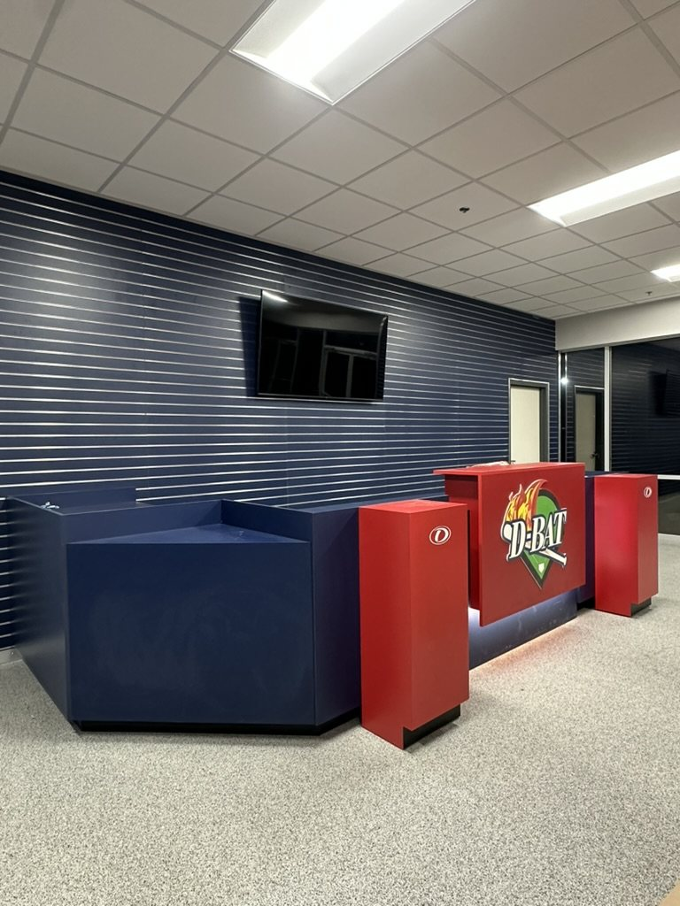
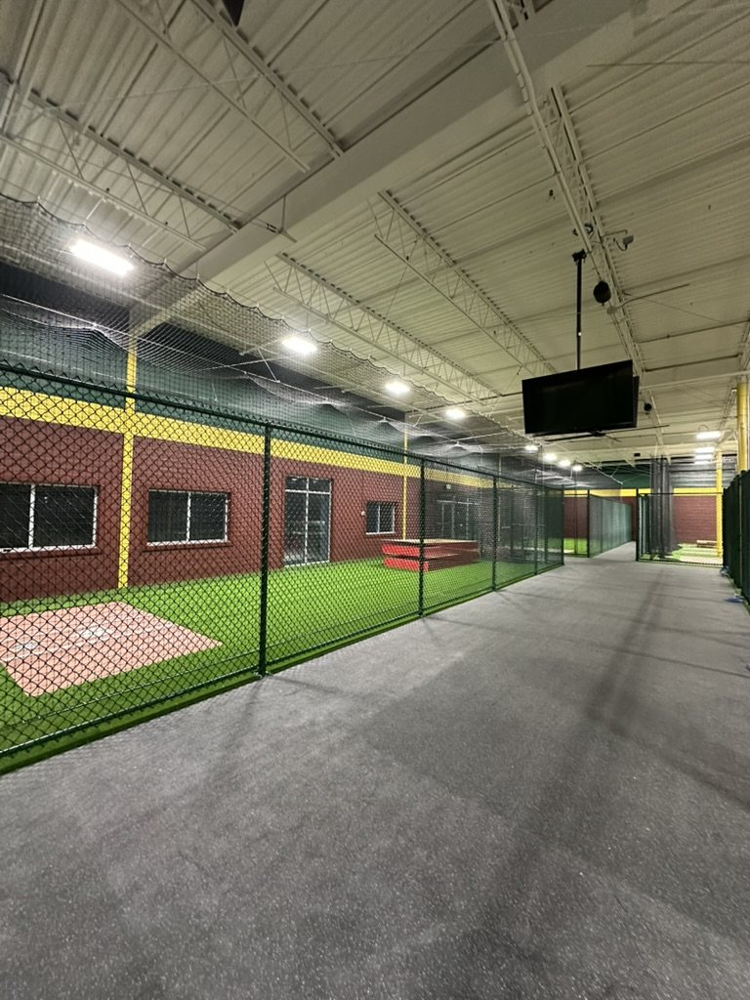
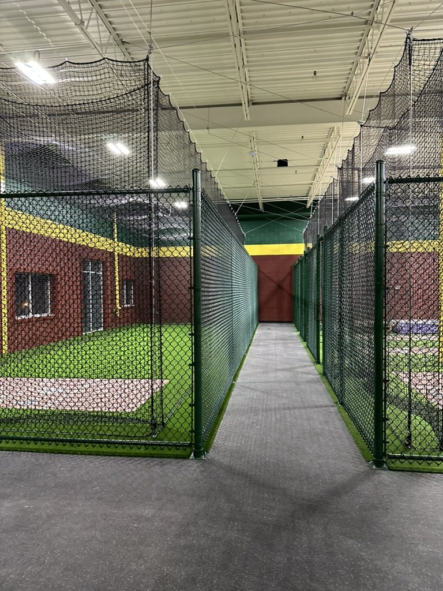
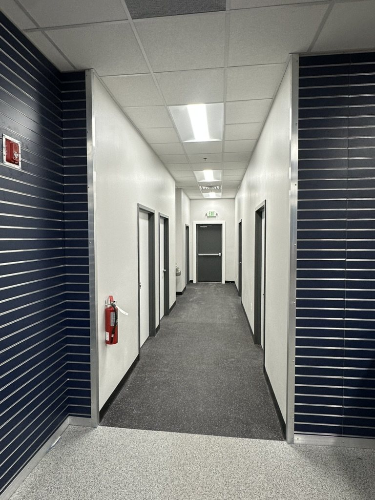

← ALL PROJECTSCommercial Recreation / Interior Fit-Out
D-BAT — Windsor Mill
Completed commercial recreation fit-out at D-BAT Windsor Mill, Maryland.
THE WORK
A finished facility that combines customer-facing space with specialized training areas.
The facility combines a branded pro shop and reception area with finished corridors, support spaces, and specialized batting-cage areas.
Project Scope
- Commercial interior fit-out
- Pro shop / reception area
- Finished corridors and support spaces
- Batting-cage and turf facility coordination
- Ceiling, lighting, flooring, and finish integration
- Field coordination through completion
CURRENT D-BAT PROGRAM LEADERSHIP
GMT LeadershipDaniel Buchnik — Co-Owner & President of Construction
D-BAT LeadershipMatt Provo — Director of D-BAT Development & Operations
Delivery FocusPlanning, preconstruction, coordination, and execution
PROJECT GALLERYCompleted pro shop and reception Completed batting facility Batting-cage corridor Finished interior hallway
D-BAT Windsor Mill — completed project gallery.
Pro shop, training facility, batting-cage corridor, and finished hallway.




D-BAT DEVELOPMENT
Planning a D-BAT facility?
Bring your proposed location, current plans, and target opening date. GMT can discuss construction planning and the coordination your facility needs.
DISCUSS YOUR D-BAT PROJECT →